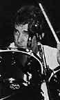

Taken from Circus -- December 31, 1984
"I think it's important to tour," says Rush drummer Neil Peart. "Even when
touring's not a commercial necessity, it's still important musically.
Because, like anything else, if you stop doing it for awhile, you tend to
get complacent and your abilities atrophy. Traveling is important -- in terms
of getting input and staying in touch with what's happening in the world."
Compared to other bands, Rush has kept a low profile in the press, because, said Peart, "We're more interested in the work than the press in a general sense. I enjoy doing interviews because I like to talk about what I'm doing, but we don't go out of our way to go to every radio station in town, and we don't go out of our way to get in print everywhere we can. I think that's a limiting factor -- we won't inconvenience ourselves for the sake of getting some press. It has to be done as a secondary priority.
"The success is important to the band, but our main priority is to do exactly what we want to."
Rush triumph at New England's huge Worcester Centrum
by Dan Hedges
Taken from Circus -- December 31, 1984
Worcester, Mass.
THE LADY MEANS BUSINESS.
In the shopping-mall restaurant across the road from the Centrum, the stocky teenage hostess stands blocking the aisle like a linebacker on the fifty yard line.
"The rest rooms are for customers only," she says in an I-take-my-job-seriously voice -- the proverbial 18 year old who's pushing 40.
It's hard to say who looks more desperate: the guy in the denim jacket and Rush T-shirt or his girlfriend. But we're talking major emergency here. Back teeth are floating. Eyeballs are beginning to roll. The couple, slightly doubled-over, appear to be in great pain. The hostess isn't budging.
But she no sooner turns and marches off with a sadistic grin when the two fans make their move. Like cat burglars, they tip-toe past her hand-in-hand, shoot toward the back of the place, and duck unnoticed through the doorway marked "Gents."
They're in there for a few minutes, and when the door squeaks open and the couple emerge, it's with an audible sigh of relief. Passing the preoccupied hostess, they pause. And then, in a choreographed humanist gesture that would make Neil Peart proud, they flash her a magnificent middle finger. Standing by the exit, their right arms held aloft, they paint a perfect portrait of Rush fans in triumph.
At the Worcester Centrum, Rush pulled off a triumph themselves, proving that lingering rumors and the band's worst fears were groundless: rumors that the Canadian trio was fragmenting after years of almost non-stop touring; fears that their fans (as evidenced by the lukewarm reception given Signals two years ago) were beginning to drift.
Backed by Laserium and rear-projected video clips (ranging from the suburban montage of "Subdivisions" to SCTV's Count Floyd's howling introduction to "The Weapon"), Rush proved there are still a surprising number of tricks and turns to be squeezed out of what Geddy Lee once admitted is a "potentially limiting" three-piece lineup.
Not surprisingly, the show was heavily weighted in favor of Grace Under Pressure. Although the unfamiliarity of the new stuff was sometimes met by a subdued crowd reaction, the five months the band have spent on the road have honed items like "The Body Electric," "Between the Wheels," and "The Enemy Within" to a finer edge than the studio versions. Lee's streamlined Steinberger bass and battery of keyboards cut through clear and strong, as did Neil Peart's drums (particularly during a lengthy but imaginative drum solo). And though Alex Lifeson's guitars fell victim to the Centrum's dodgy acoustics, he seems to have pulled out of the creative nose-dive he made during Signals.
The Grace Under Pressure tour marks the first time the "Fear Trilogy" has been wheeled out in its entirety -- thanks to what Peart calls "having a few years behind us and better technology," which has allowed the previously unperformable "Witch Hunt" to be played live. By the end of the night, however, the most surprising aspect of the gig was the reaction to the tracks culled from Signals.
"We've noticed that ourselves," Neil Peart says, winding down backstage after the gig as Lee and Lifeson sit glued to a televised baseball game across the hall. "It's funny. On the tour on which Signals was first presented, it received an uncertain reaction. But we'd also noticed that on the last tour with "Vital Signs" from Moving Pictures. People didn't know what to make of it, they were responsive and polite, but didn't really get enthusiastic. It's only been on this tour that the song has come into its own. Our audience has learned to rock to that kind of rhythm, but it took people a while to accept -- as it did me."
The Centrum show was the work of a looser Rush, though Peart explains that the show is still "largely arranged and organized, because we have a standard we never want to fall below, a certain level of professionalism. If you try to be spontaneous and innovative, that can sometimes be very wonderful. We come into each hall in the afternoon and spend a period of time being totally spontaneous. Some days it is excellent. It might even be worth paying money for. Other days it's terrible. It's a way for us to express ourselves for a while, and then get into the discipline of being professionals.
 "There's a bad thing going on with some bands, however, that I find hard to handle. We've had a lot of different bands open for us on this tour. But so many don't even care about being good. I often sit by the side of the stage, and it's great to see a good band before we play. It's inspiring and can contribute to our performance. But sometimes...." Peart shrugs. "All they care about is the clothes, the pose and the party. What goes through their heads?"
"With Rush," Peart says, "quality is the bottom line. On tour, we've reamed how to pace ourselves better, how to distract ourselves, how to disperse the pressure in a creative and graceful way. Caring about what I do has motivated my life. Rush have always cared, and when we're making decisions, we break it down to one fundamental thing: if we were a fan of Rush, what would we think?"
{kind=link}
{kind=link}
{kind=link}
{kind=link}